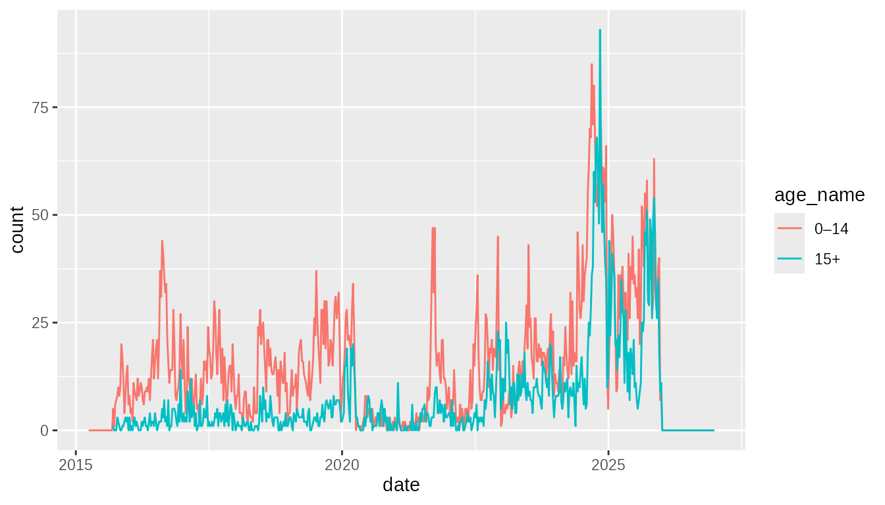
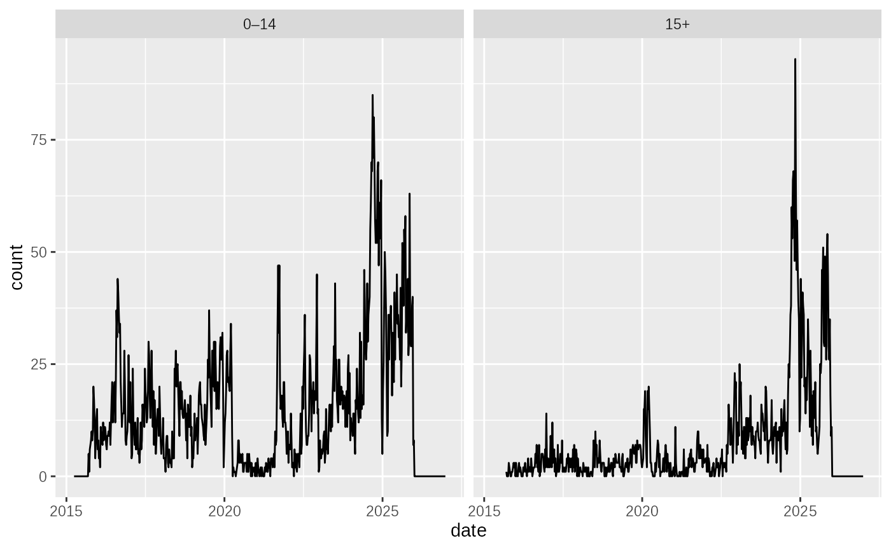
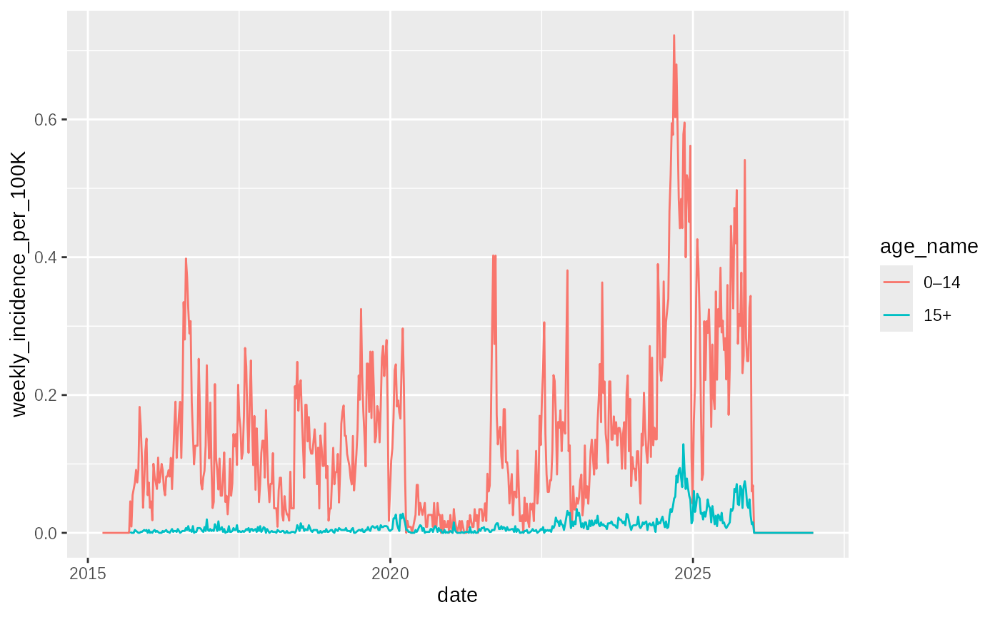
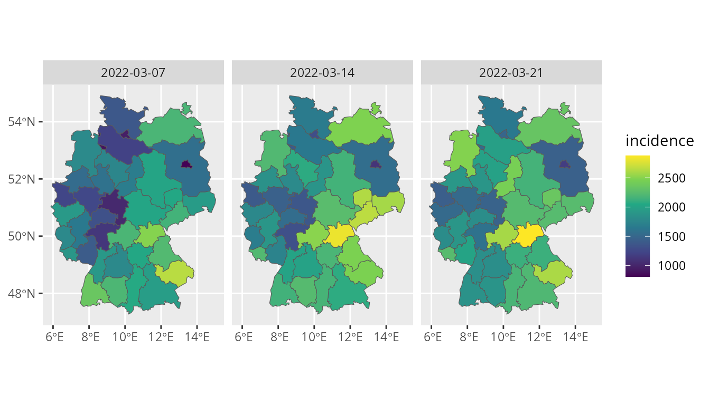
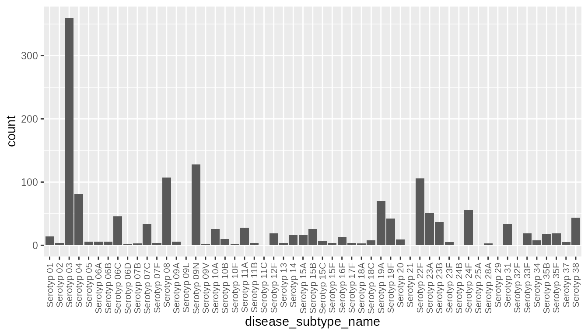

Introduction
rsurvstat provides access to the SurvStat
web service provided by the Robert Koch Institute. This collects
infectious disease data in accordance with the German Infection
Protection Act on the occurrence of numerous infectious diseases in
Germany. The data is provided by a SOAP based web service as an OLAP
cube. This package provides a convenient wrapper around the service,
which allows relatively simple extraction of time series data faceted by
age, disease, disease subtype, and geography at 3 levels of resolution.
Query results are cached for speed.
More details on SurvStat are available here
Age stratification example
This example shows how to get some disease count data stratified by
age. valid age groupings are defined in the
rsurvstat::age_groups list ( 8 items). Supported diseases
are in the rsurvstat::diseases list (121 items).
The data demonstrates left and right truncation due to ascertainment bias and reporting delays. Zero counts are not made explicit in the data and it is not possible to differentiate between zeros and missing values. The count data is not normalised by population size, so on first glance it seems there is not much difference between the age groups:
entero = get_timeseries(
diseases$Enterovirus,
"Count",
age_group = age_groups$zero_fifteen)
ggplot2::ggplot(
entero,
ggplot2::aes(x=date, y=count, colour = age_name)
) +
ggplot2::geom_line()
We can infer an estimate of the time varying population denominator from SurvStat and normalise the count, which highlights the difference between the age groups:
entero2 = entero %>%
fit_population() %>%
dplyr::mutate(weekly_incidence_per_100K = count/population*100000)
ggplot2::ggplot(
entero2,
ggplot2::aes(x=date, y=weekly_incidence_per_100K, colour=age_name)
) +
ggplot2::geom_line()
Geography
Data can be retrieved by region. There are 3 levels of detail,
state, nuts and the most granular
county. This is an example of the incidence of COVID-19
between 2020 and 2022 at NUTS2 level (legend hidden for clarity).
covid_by_nuts = get_timeseries(
disease = diseases$`COVID-19`,
measure="Incidence",
years = 2020:2022,
geography = "nuts"
)
ggplot2::ggplot(
covid_by_nuts,
ggplot2::aes(x=date, y=incidence, colour=geo_name)
) +
ggplot2::geom_line() +
ggplot2::guides(colour = ggplot2::guide_none())
For geographic data matching sf maps are supplied in the
package, that can be joined to the SurvStat output. We pick
3 interesting times in the lead up to the peak:
# Pick a set of dates around the peak:
peak_date = covid_by_nuts$date[covid_by_nuts$incidence == max(covid_by_nuts$incidence)]
peak_date = peak_date+c(-14,-7, 0)
peak = covid_by_nuts %>% dplyr::filter(date %in% peak_date)
ggplot2::ggplot(
NutsKey71Map %>% dplyr::inner_join(peak, by=c("Id" = "geo_code")),
ggplot2::aes(fill = incidence)
)+
ggplot2::geom_sf()+
ggplot2::facet_wrap(~date,nrow = 1)+
ggplot2::scale_fill_viridis_c()
Disease subtype
Data can also be retrieved as snapshots in time, either at a yearly or weekly resolution. The periods are defined in terms of infectious disease seasons starting at calendar week 1, 27 or 40. In this example we get the pneumococcal serotypes for a single winter season (2024 week 27 to 2025 week 27). This does not extract the whole timeseries but just the cases for that single time period.
pneumo_by_serotype = get_snapshot(
disease = diseases$`Pneumococcus (IfSG`,
disease_subtype = TRUE,
season = 2024,
season_start = 27
)
pneumo_by_serotype = pneumo_by_serotype %>%
# remove non typed and unknowns:
dplyr::filter(startsWith(disease_subtype_name,"Sero")) %>%
# removed serotypes with no detected cases:
dplyr::filter(!is.na(count))
ggplot2::ggplot(
pneumo_by_serotype,
ggplot2::aes(x=disease_subtype_name, y=count)
)+
ggplot2::geom_bar(stat="identity")+
ggplot2::theme(axis.text.x = ggplot2::element_text(size = 8, angle = 90,hjust=1,vjust=0.5))